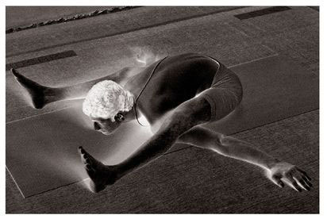
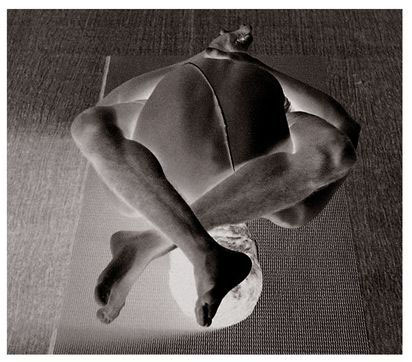

METHOD
Sit, bending the arms and legs as in Marichyasana (B), turn the waist, bring the left arm around the front of the right knee and around toward the back, as in Marichyasana (C), bring the right arm around the back and take hold of the left wrist with the right hand, turn the waist fully, lift the chest, doing rechaka and puraka slowly and deeply, as much as possible; this is the 7th vinyasa (see figure). In the same manner, practice the above for the left leg. The method for the vinyasas has been specified earlier.
BENEFITS
The benefits of the four Marichyasanas are different, though all cure diseases in accordance with man’s physical nature. Aspirants should know this and practice them. They each cure gaseous movements in the stomach and intestines, as well as movements of the rectum, such as diarrhea, and restore digestive power. With that, flatulence, indigestion, and constipation are eliminated. Some women suffer from abdominal pain during menstruation. This is removed by the practice of these asanas. The womb becomes powerful and enables a woman to carry a child strongly, and miscarriage due to weakness is cured. The vata pitta kosha [large intestine and gall bladder] are purified, as is the manipura chakra [the third chakra at the navel center], and the body gains strength and power. It is a very good idea for women to practice Marichyasana, but they should do so under the guidance of a Guru. There should be no error in sitting firmly and holding the hands and legs. Pregnant women should not practice this asana after the second month.
KURMASANA, 7TH VINYASA

SUPTA KURMASANA, 9TH VINYASA
